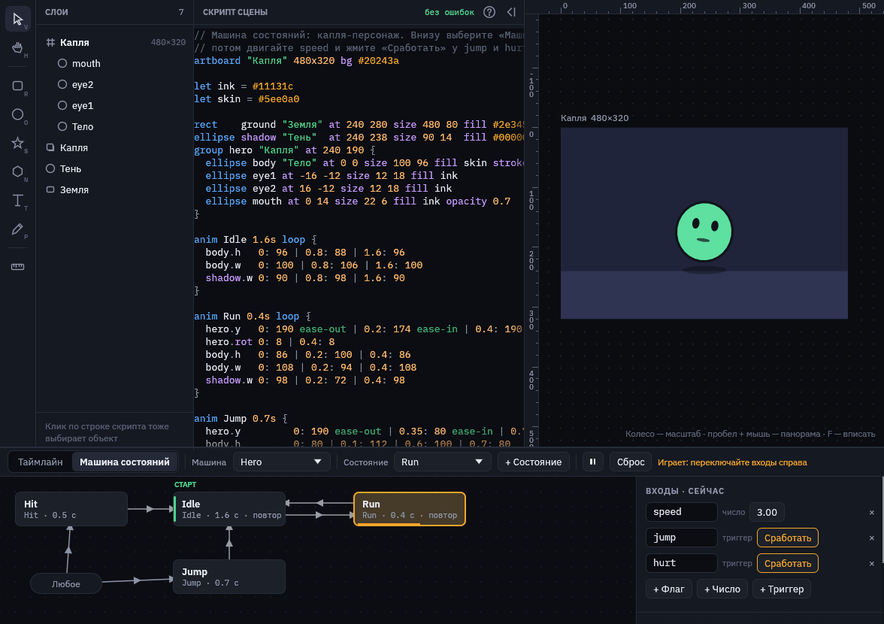
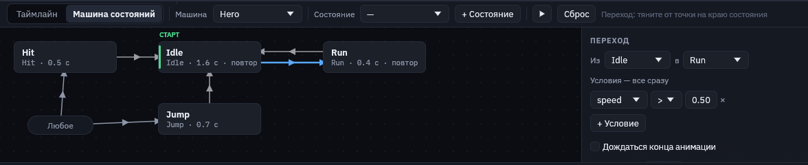
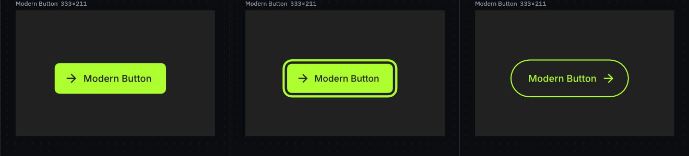
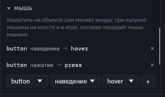
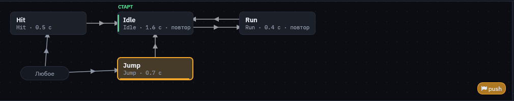
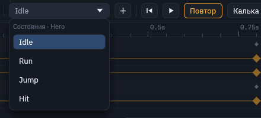

Машина состояний
Машина состояний решает, какую анимацию играть сейчас. Каждое состояние играет свою анимацию: Idle, Run, Jump. Переходы переключают состояния, когда выполнены их условия. Условия читают входы, которые выставляет игра: скорость персонажа, наведён ли курсор на кнопку, нажат ли прыжок.

machine.msc: машина запущена, speed = 3, поэтому капля в состоянии Run.Где она в редакторе
Нижняя панель переключается между двумя видами: «Таймлайн» и «Машина состояний».
- Машина — какую машину показывать. В выпадающем списке есть «+ Новая машина». Новая машина сразу получает по состоянию на каждую анимацию сцены.
- Состояние — выпадающий список состояний. Выбор выделяет состояние в графе, а если машина играет, переключает её туда сразу, без перехода.
- «+ Состояние» — новое состояние с одной из анимаций.
- ▶ или пробел — запустить машину на холсте. «Сброс» возвращает её в начальное состояние, а входы — к значениям по умолчанию.
Граф

- Состояние показано блоком: имя, анимация, длительность и повтор. Блок с зелёной меткой СТАРТ — начальное: с него машина начинает.
- Переход показан стрелкой. Чтобы его создать, наведите курсор на состояние и тяните от оранжевой точки на правом краю к другому состоянию.
- «Любое» — переходы отсюда срабатывают из любого состояния. Так удобно делать удар или прыжок, которые могут начаться когда угодно.
- Блоки двигаются мышью, место запоминается в скрипте (
at x y). Пустое место графа тоже тянется: так граф прокручивается, как и колесом. - Щелчок по блоку или стрелке выбирает их. Delete, пока курсор над графом, удаляет выбранное. Двойной щелчок по состоянию открывает его анимацию на таймлайне.
Настройки справа
Входы видны всегда. Флаг включён или выключен, число — любое, триггер срабатывает один раз. Пока машина стоит, здесь задаются значения по умолчанию. Пока играет — текущие значения: двигайте число, включайте флаги, жмите «Сработать» у триггера, как это делала бы игра. Имя входа можно переименовать прямо в поле: условия переходов переименуются вместе с ним.
Состояние: имя, анимация, «Сделать начальным», «+ Переход в…» и «Открыть на таймлайне».
Переход: откуда и куда, условия, «Дождаться конца анимации» и смешивание.
- Условия выполняются все сразу. Для флага выбирается «включён» или «выключен», число сравнивается со значением, триггер просто «сработал». Переход без условий срабатывает сразу.
- Дождаться конца анимации — переход ждёт, пока анимация состояния доиграет до конца. Так прыжок возвращается в Idle после приземления.
- Смешивание — за сколько секунд старая анимация плавно перетекает в новую. Без него переключение мгновенное.
Сначала проверяются переходы из текущего состояния, по порядку, потом переходы из «Любого». За шаг срабатывает не больше одного перехода. Переход из «Любого» не перезапускает состояние, которое уже играет.
Мышь: живой предпросмотр

examples/modern-button.msc: курсор над кнопкой, кнопка нажата, курсор ушёл.Кнопке или переключателю не нужна игра, чтобы ожить: машина сама слушает мышь. Раздел «Мышь» справа связывает объект и событие указателя со входом:
| Событие | Вход | Что делает |
|---|---|---|
наведение, hover | флаг | Включён, пока указатель над объектом или чем-то внутри него. |
нажатие, press | флаг | Включён, пока кнопка мыши, нажатая на объекте, удерживается. Как :active в CSS. |
клик, click | триггер, флаг или число | Нажали и отпустили на объекте: триггер срабатывает, флаг переключается (галочка, тумблер), число растёт на 1. |
указатель X, Y; x, y | число | Где указатель поперёк объекта: 0 у левого (верхнего) края, 1 у правого (нижнего). Тянется и за краем, если нажали на объекте, — для ползунков и «взгляда за курсором». |

Чтобы добавить связь, выберите объект, событие и вход и нажмите «+». Кнопка «Кнопка: hover и press на …» делает обычную связку для выбранного объекта одним щелчком: добавит флаги hover и press, если их нет, и свяжет их с наведением и нажатием.
Когда у машины есть связи с мышью, вверху появляется «▶ Проверить». Машина запускается, а холст перестаёт выделять и двигать объекты: мышь наводит, нажимает и кликает, как в игре или в браузере. Над объектом, который слушают, курсор становится «рукой». Справа во «Входах» видно, как меняются значения. Ещё раз «Проверка» — остановить. Тот же запуск есть кнопкой ▶ в панели машины.
В скрипте это строки listen внутри машины. Удаление объекта или входа убирает и его связи.
machine Pointer {
input hover false
input press false
listen button hover -> hover // объект, событие, вход
listen button press -> press
…
}Игра делает то же самое вызовом MachinePlayer::pointer(машина, документ, точка, нажата) перед каждым шагом: точка в координатах артборда.

push — его услышала бы игра.События анимаций (строка «События» на таймлайне) во время запуска всплывают плашками в правом нижнем углу графа.
Выбор состояния на таймлайне

На таймлайне анимации выбираются выпадающим списком. Если в сцене есть машина, сверху идут её состояния. Выбор состояния открывает его анимацию для правки ключей.
Как машина выглядит в скрипте
machine Hero {
input speed 0 // число, по умолчанию 0
input hover false // флаг; true — включён в начале
input jump trigger // срабатывает один раз
any at 40 128 // где блок «Любое» в графе
state Idle at 230 20 // первое состояние — начальное
state Walk anim Run // играет анимацию Run
state Jump
Idle -> Walk when speed > 0.5 blend 0.15s
Walk -> Idle when speed <= 0.5 and not hover
any -> Jump when jump
Jump -> Idle at end blend 0.1s
}| Строка | Запись | Пояснение |
|---|---|---|
| Вход | input имя 0, input имя false, input имя trigger | Число, флаг или триггер. Можно и словами: input speed number 2, input hover bool. |
| Состояние | state Имя [anim Анимация] [at x y] | Без anim играет анимацию с тем же именем. Первое состояние — начальное. |
| Переход | Из -> В [when …] [at end] [blend 0.2s] | any вместо «Из» — из любого состояния. |
| Мышь | listen объект событие -> вход | События: hover, press, click, x, y. См. «Мышь». |
| Условие | hover, not hover, jump, speed > 0.5 | Сравнения: > >= < <= == !=. Несколько условий соединяются and. |
Машина пишется на верхнем уровне, обычно в конце файла. Правки в графе и справа переписывают только изменившиеся строки, а комментарии и порядок остальных строк остаются как были.
Пока машина работает в редакторе. Вывод в игру (Godot) — следующий шаг: там игра будет так же выставлять входы, а машина переключать анимации.